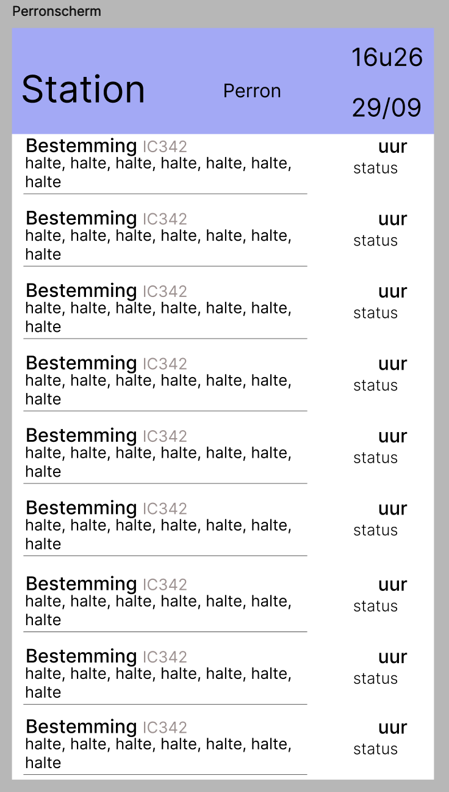
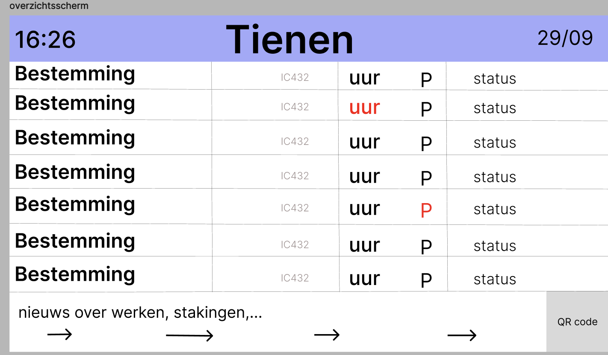
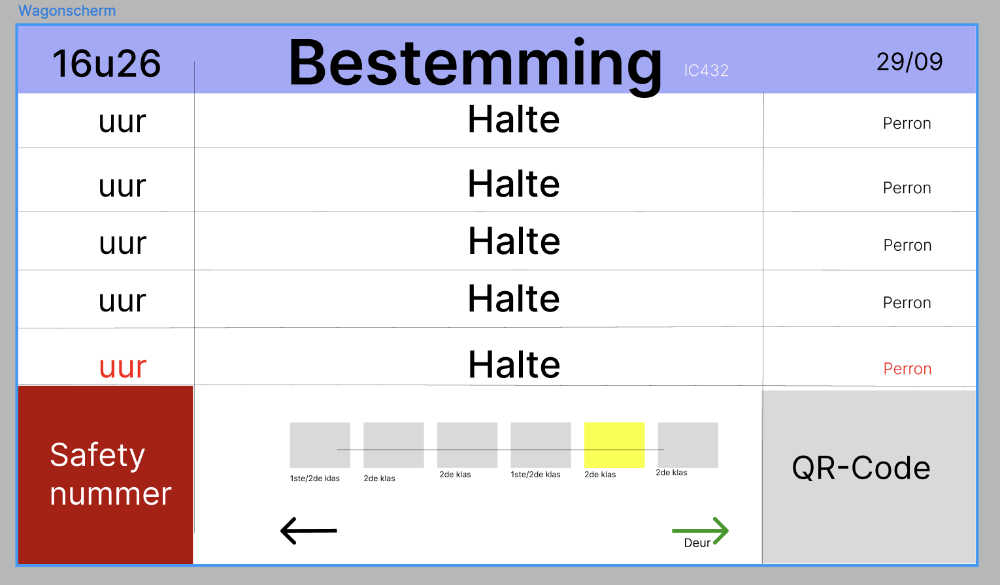

Ik heb de lijn moeten weglaten.
Ik heb de trein tekening ook eruit gehaald.
Heb de status onder het uur toegevoegd in het kort zodat je wel geüpdatete kunt blijven.

Heb weer hetzelfde paars gebruikt in de algemene balk om zo ook een samenhorigheid te hebben.
Heb in de rechter onder hoek nog een QR-code toegevoegd omdat ik die vergeten was.

Hier heb ik in mijn schetsen een fout gemaakt en het is in landscape formaat.
Heb weer dezelfde algemene kleur balk.
In die balk heb ik eerst het uur gezet dan bestemming dan datum.
De algemeen nieuws balk heb ik bij dit scherm weggelaten.
Safety nummer is verplaatst naar rechter onder hoek.
Linker onder hoek is een QR-code bijgekomen.
Wagon en deur info is verplaatst naar vanonder in het midden.
Paarse balk bovenaan.